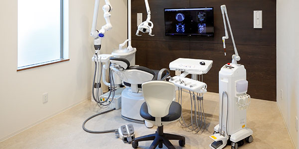

医院の特徴

下新庄駅からすぐの歯科医院、「イクシマ歯科クリニック」は、お子さまからご年配の方まで
あらゆる世代の患者さまに通いやすい歯科医院です。
地域密着型の歯科医院として、地域の皆さまの歯の健康維持をサポートしています。
こちらでは当院の特徴をご紹介します。
「歯医者は怖い」「歯科治療は痛い」といったマイナスのイメージをお持ちの方、
当院では丁寧なお声がけ、痛みの少ない治療を心がけていますので、ぜひ安心してお越しください。
イクシマ歯科クリニックの特徴
1
キッズスペース
当院ではお子さま連れの親御さまにとって来院しやすいように、キッズスペースを待合室と診療室に隣接した場所に設置しておりますので、遊びながら楽しく待ち時間を過ごしていただけます また、治療が終わられたお子さまにはコインをお渡ししてガチャガチャをしてもらうなど、歯医者さんを嫌いにならないような工夫もしております。 トイレにはおむつ交換台も設置しておいますので、小さなお子さまをお連れの親御さまも安心して来院していただけます。
2
痛くない治療
歯科治療において、麻酔注射が苦手という方は多くいらっしゃいます。 そこで当院では痛みやストレスの少ない治療を目指し、表面麻酔や電動麻酔器による麻酔を行っております。 表面麻酔は注射を打つ前に歯茎に塗ることで、皮膚に刺さる時のチクリとした痛みをほとんど感じること無く麻酔を打つことができます。 電動麻酔機はゆっくり一定の力で麻酔液を注入していくことができるので、痛みを感じにくいです。表面麻酔と併用することで、ほぼ無痛での麻酔注射が可能になります。
3
訪問歯科
イクシマ歯科クリニックでは介護施設やご自宅で寝たきりの方、歩行困難な方、入院中で通院できない方など、歯科治療が必要でも来院が難しいという患者さまに対し、歯科医師、歯科衛生士が訪問し、歯科診療や口腔ケアを行う「訪問歯科診療」を行なっております。 訪問歯科診療は保険適用されますので、患者さまには一部の負担で治療を受けていただくことが可能ですので安心してご利用ください。
4
女性医師が在籍
お子さまや女性の患者さまの中には、「男性医師には話しづらい」「大口を開けるのがはずかしい……」というお悩みがあるかもしれません。 当院は女性の医師が在籍し、患者さまのお悩みに配慮した安心・親切・丁寧な診療を心がけています。 女性ならではの細やかな視点で治療を行なっていきますので、皆さまの歯に関するお悩みやご不安は、遠慮なくお話しください。
5
駐車場完備
イクシマ歯科クリニックでは医院正面に駐車場を2台分ご用意しております。 お車で通いたいという患者さまも安心して通っていただけます。 また、駐輪場もございますので自転車でお越しいただいても安心です。
6
安心のバリアフリー
イクシマ歯科クリニックでは高齢者の方、お身体の不自由な方、車いすをご利用の方でも 安心して来院頂けるようにバリアフリー環境を整えております。 玄関には段差を無くすためのスロープを設置し、院内は広々した作りになっていますので、 全ての患者さまが快適に移動できるようになっております。 また、ベビーカーもそのまま診療室まで入れるようになっておりますので お子さま連れの方も安心してお越しください。